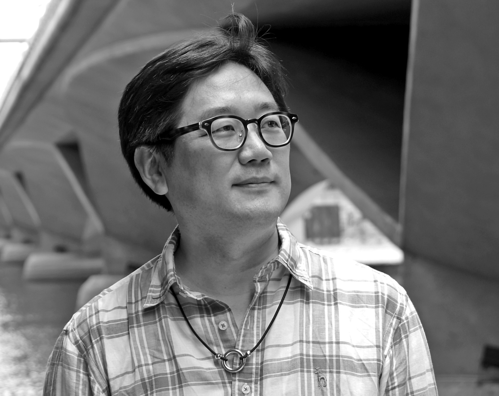

2026
Behind the Hill, the Pasqueflower
Solo Violin
Composer · Professor · Seoul
정승재 · 鄭丞宰
Repetition · Transformation · Tradition
Korean composer CHUNG Seung Jae creates music at the intersection of tradition and the present, reimagining familiar materials through repetition, transformation, and renewed listening.

01
About
CHUNG Seung Jae is a Korean composer whose music explores the space between tradition and contemporary expression. Central to his compositional language are the ideas of repetition and transformation, through which familiar musical materials are gradually reshaped and given new identities. Korean regional folk songs have become an important source of inspiration in his work, and he reimagines their melodic and emotional character through a contemporary musical language in order to explore the living meaning of tradition today.
His works have been presented internationally at Gaudeamus Music Week, ISCM World Music Days, festivals of the Asian Composers League, the Asahi Art Festival, Randspiel Festival, Intersonanzen Musik Festival, and the Tongyeong International Music Festival, among others. He has received commissions from numerous ensembles and organizations, including TIMF Ensemble, Korean Chamber Orchestra, Ensemble Eclat, and the Korean Piano Duo Association.
CHUNG studied composition at Seoul Arts High School and Seoul National University before earning his Master of Music and Doctor of Musical Arts degrees from the Manhattan School of Music, where he received the Nicholas Flagello Award twice. He is currently Professor of Composition at Sangmyung University and serves as Chairman of ACL-Korea, Vice President of the Korean Composers Association, and a board member of the Tongyeong International Music Foundation.
CHUNG Seung Jae is a Korean composer whose music explores the space between tradition and contemporary expression. At the core of his compositional language are the ideas of repetition and transformation: musical materials are revisited, gradually reshaped, and given new identities through time. In particular, Korean regional folk songs have become an important source of inspiration in his recent work. By reimagining their melodies, rhythms, and emotional character through a contemporary musical language, he seeks to explore how tradition can remain alive and meaningful in the present.
His music ranges widely across vocal, chamber, and orchestral genres, while maintaining a consistent interest in clarity, transformation, and communication with listeners. Rather than treating contemporary music as an isolated or purely experimental practice, he aims to create works that are artistically rigorous yet open and approachable, allowing familiar musical memories and new sonic possibilities to coexist.
CHUNG’s works have been selected and presented at numerous international festivals and competitions. During his studies, he received recognition at the JoongAng Music Concours and was later selected for Gaudeamus Music Week in the Netherlands. His music has also been featured at the ISCM World Music Days in Croatia and at festivals of the Asian Composers League in Israel, New Zealand, Singapore, Taiwan, and Japan. His works have been performed at festivals including the Asahi Art Festival, Randspiel Festival, Intersonanzen Musik Festival, and the Tongyeong International Music Festival.
He has received commissions from a wide range of ensembles and organizations, including TIMF Ensemble, Korean Chamber Orchestra, Molto Nuovo Ensemble, Vocal Ensemble for Contemporary Music, Korean Piano Duo Association, Ensemble Eclat, Sori Ensemble, Soriul Ensemble, Lynn Trio, I Maestri, Seoul Ensemble Tutti, and others.
After graduating from Seoul Arts High School and Seoul National University, CHUNG continued his studies in the United States at the Manhattan School of Music, where he earned both his Master of Music and Doctor of Musical Arts degrees. During his studies there, he received the Nicholas Flagello Award twice, an honor presented to outstanding composers. His orchestral work Being and Becoming and Serenade for Strings were selected for the ARKO Contemporary Orchestra Music Festival, and both works subsequently received support through Arts Council Korea’s performance-support programs.
He is currently Professor of Composition at Sangmyung University. In addition to his academic and creative work, he serves as Chairman of ACL-Korea, Vice President of the Korean Composers Association, and a board member of the Tongyeong International Music Foundation.
02
Selected Works
Solo Violin
Solo Bass Clarinet
String Orchestra
Piano Quintet
The complete catalogue, scores, program notes, and recordings will be added next.
03
Media
Performance videos and recordings will be curated here from YouTube, Vimeo, or SoundCloud.
04
Contact
Contact details will be added here.